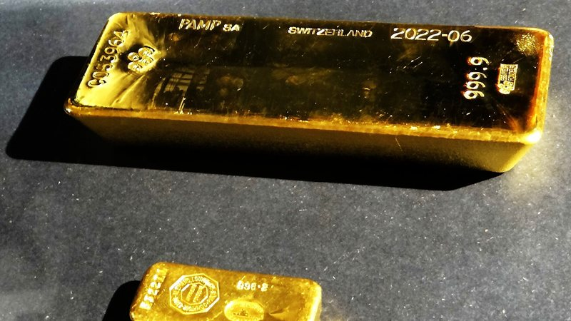
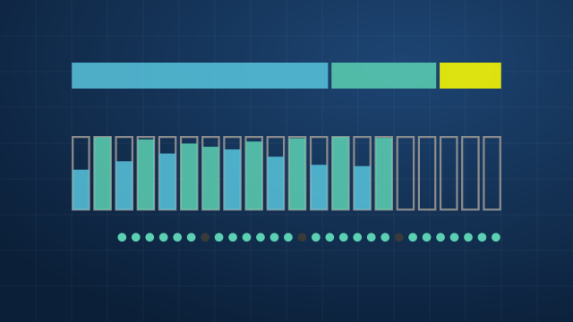

Home › Study blog
Study blogEverything CFA candidates ask, answered
Requirements, costs, salaries, how long it takes, how it compares with the FRM, MBA, CPA and ACCA, formulas and calculator settings, plus study plans, Level II vignettes, Level III written answers, ethics, mock exams and exam day. The advice draws on CFA Institute's own guidance and on what works for candidates, written as one consistent method.
Most searched: the guides candidates look for most
 Study blog10 min read
Study blog10 min readCFA salary by country: what charterholders earn around the world
CFA pay in 19 countries, from the United States, Switzerland and Singapore to Germany, the UAE, India and Nigeria, in local currency and US dollars. What drives the gaps, why different sources disagree, and how to read any CFA salary figure.
Most searchedBy Gowtham Kumar Study blog27 min read
Study blog27 min readBA II Plus calculator guide: every function, on a calculator you can press
The complete guide to the BA II Plus for CFA candidates, built around a working replica of the calculator. Press the keys yourself or press Play and watch every keystroke: settings, clearing, memory, TVM, amortisation, bond pricing, NPV and IRR, interest conversion and statistics: the functions the CFA exams actually use, each with its formula and a picture.
Most searchedBy Gowtham KumarStudy blog14 min readCFA jobs and salaries: 10 career paths and what they pay around the world
What charterholders actually do, from credit and research analyst to portfolio manager and chief investment officer, how each job uses the CFA, and what each role pays in ten countries, with bonuses, plus an up-to-date look at fast-rising pay in India, China and the Gulf.
Most searchedBy Gowtham Kumar
Study blog5 min readIs the CFA worth the money? Cost against pay, country by country
The three exams cost USD 3,520 at early registration. In the US that is about two weeks of an analyst's base pay; in India it is about five months of an analyst's median pay, but just over one month of what a new charterholder earns. Here is the full money picture.
Most searchedBy Gowtham KumarStudy blog4 min readHow long it really takes to pass all three CFA levels
We modelled 100,000 candidates through the real exam calendar and retake rules. At average pass rates, half finish all three exams within three years; well-prepared candidates usually finish in 18 months to two years.
Most searchedBy Gowtham Kumar Study blog4 min read
Study blog4 min readThe most challenging CFA topics at each level, and how to beat them
Difficulty is weight times trouble. At Level I the danger is financial statements and fixed income; at Level II, the valuation-heavy vignettes in financial statements, equity and derivatives; at Level III, writing answers for asset allocation, derivatives and your pathway.
Most searchedBy Gowtham Kumar Study blog3 min read
Study blog3 min readAre you ready for CFA Level I? A 5-minute self-check with a knowledge test
Five questions about your time, English and goals, then ten real questions on statistics, compounding, accounting, economics and markets, each with a diagram and an explanation. You get a score by area and a plan for the gaps, before you pay the exam fee.
Most searchedBy Gowtham Kumar Study blog4 min read
Study blog4 min readCan engineers do the CFA? Yes, and here is how to make it work
Engineers start with the hardest-to-teach skills, maths and problem solving, and usually lack accounting and economics. Fix those first, then aim the charter at roles that value both: quant, risk, data, fintech and research.
Most searchedBy Gowtham Kumar Study blog3 min read
Study blog3 min readCan you do the CFA from a non-finance background? Commerce, science, medicine, law and arts
Any bachelor's degree, or 4,000 hours of work and study, qualifies you. What differs by background is where you start, how many extra weeks you need and which roles fit best. Here is a guide for each.
Most searchedBy Gowtham Kumar Study blog4 min read
Study blog4 min readHow passing CFA Level I helps your job (and how to use it)
Level I is not a qualification on its own, but it is a credible signal. Survey data shows earnings about 14% higher on average after passing it. Here is what it changes at work, which jobs it opens and how to describe it correctly on your CV.
Most searchedBy Gowtham Kumar Study blog5 min read
Study blog5 min readCIPM, Investment Foundations and other CFA Institute programs: which one fits your job?
The CFA charter is not CFA Institute's only credential. The CIPM certifies investment performance measurement in two exams; shorter certificates cover the investment basics, sustainable investing, climate, private markets and private equity. Costs, hours and who each one is for.
Most searchedBy Gowtham Kumar Study blog5 min read
Study blog5 min readThe history of the CFA charter, from a 1945 proposal to 200,000 charterholders
The CFA charter began as an argument in the first issue of an analysts' journal in 1945. The first exam was sat by 284 people in 1963; by 2019 more than a quarter of a million exams were sat in one year. How a small American credential became the global standard for investment professionals.
Most searchedBy Gowtham KumarStudy blog4 min readWhy is the CFA charter so prestigious?
The charter is respected because it is hard to earn, broad, tied to an ethics code that holders reaffirm every year, and recognised at master's-degree level in twelve major markets. Here is the evidence, and the limits of what the charter can do for you.
Most searchedBy Gowtham KumarBefore you start: requirements, cost and careers
 Study blog3 min read
Study blog3 min readCFA requirements: degree, passport, work experience and who can register
You do not need a finance degree, or even a finished degree, to start. You do need a passport, English, and either a degree in sight or enough work experience. Here is exactly when each level opens up.
Before you startBy Gowtham Kumar Study blog3 min read
Study blog3 min readHow much does the CFA cost in total?
Exam fees alone come to USD 3,520 to 4,570 for all three levels. Add study materials and any retakes, and most candidates spend somewhere between USD 4,000 and 8,000.
Before you startBy Gowtham Kumar Study blog3 min read
Study blog3 min readHow long does the CFA take?
The fastest possible route through all three exams is about a year, and 18 months is a more realistic fast track; most candidates take two to four years. Then you need 4,000 hours of work experience for the charter.
Before you startBy Gowtham Kumar Study blog3 min read
Study blog3 min readIs the CFA worth it? An honest answer for 2026
For investment careers the charter is still one of the strongest signals you can earn, at a fraction of an MBA's cost. For careers outside investing, the same hours may be better spent elsewhere.
Before you startBy Gowtham Kumar Study blog5 min read
Study blog5 min readWhy is the CFA so hard?
It is not that any one idea is impossible. It is the volume, the depth at the higher levels, studying while working, and a pass line set high enough that fewer than half of candidates clear it.
Before you startBy Gowtham KumarThe CFA compared
CFA vs FRM: which should you do?
The CFA is the broad investment credential; the FRM is the specialist risk credential. Choose by the job you want, and know that many risk professionals end up holding both.
The CFA comparedBy Gowtham KumarStudy blog3 min readCFA vs MBA: which is right for your career?
The CFA goes deep into investments, cheaply and while you keep working. An MBA goes broad, costs far more, and buys a network and a career reset. They answer different questions.
The CFA comparedBy Gowtham Kumar Study blog3 min read
Study blog3 min readCFA vs CPA, CFP, ACCA and CA: how the finance qualifications compare
The CFA is for investment decisions; CPA, ACCA and CA are for accounting and audit; the CFP is for personal financial planning. Here is how they differ in exams, experience and careers.
The CFA comparedBy Gowtham KumarHow the exams work
Study blog4 min readCFA exam results: when they arrive and how to read them
Results come by email five to nine weeks after your exam window closes, as a simple pass or fail plus a score report. The pass mark is never published, so the report is about where you stand, not a number to hit.
How the exams workBy Gowtham KumarStudy blog6 min readCFA Level I vs Level II vs Level III: how the exams differ
Level I tests whether you know the tools, Level II whether you can value things with them, and Level III whether you can build and defend a portfolio for a real client.
How the exams workBy Gowtham Kumar Study blog5 min read
Study blog5 min readCFA results dates for Level I, II and III: every window in 2026 and 2027
When CFA results come out, level by level: the actual release dates for every 2026 exam window, the expected dates for the November 2026 and 2027 windows, and how many days after the exam each level usually takes.
How the exams workBy Gowtham KumarStrategy: how to tackle the exams
 Study blog4 min read
Study blog4 min readBuilding a 300-hour CFA study plan around a full-time job
Work backwards from exam day, protect the last six weeks for practice, and decide in advance what happens when a week goes wrong.
StrategyBy Gowtham KumarStudy blog3 min readHow to tackle CFA Level I
Level I rewards breadth, speed and accuracy on short questions. Cover every topic, drill the calculator, and practise at 90 seconds a question.
StrategyBy Gowtham KumarStudy blog6 min readTackling CFA Level II item sets
Level II questions come four to a case study. Read the questions first, read the vignette for the inputs, and never let one hard set eat the time of three easy ones.
StrategyBy Gowtham Kumar Study blog6 min read
Study blog6 min readAnswering CFA Level III constructed-response questions
Graders reward short, specific answers that do exactly what the command word asks. How to read the question, how much to write, and how to get partial credit.
StrategyBy Gowtham KumarStudy blog9 min readChoosing a CFA Level III pathway
Portfolio Management, Private Markets or Private Wealth: all three lead to the same charter. Choose by the job you want and the material you already use, not by guesses about difficulty.
StrategyBy Gowtham Kumar Study blog7 min read
Study blog7 min readHow to study CFA ethics
Ethics is 10–15% at every level and often decides close results. Learn the Standards through cases, read every word of the question, and when in doubt, disclose.
StrategyBy Gowtham KumarStudy blog4 min readUsing mock exams and an error log
Mocks are where marks are made. Sit them under exam conditions, then spend longer reviewing than you spent answering, and keep a log of why each mistake happened.
StrategyBy Gowtham Kumar Study blog3 min read
Study blog3 min readChoosing CFA study materials without wasting money
What the official curriculum gives you, what prep providers add, and how to choose: start from your weakness, not from a brand.
StrategyBy Gowtham KumarStudy blog4 min readCFA exam day: what to bring and what to expect
Passport, approved calculator, arrive early, and expect strict security. A checklist so nothing on the day costs you marks.
StrategyBy Gowtham Kumar Study blog3 min read
Study blog3 min readWhy first principles beats memorising for the CFA exams
Memorised formulas fade between levels and fail under a twist in the question. Ideas rebuilt from their foundations last, and they let you answer questions you have never seen.
StrategyBy Gowtham Kumar Study blog5 min read
Study blog5 min readFailed CFA Level I? What to do next, step by step
More than half of Level I candidates fail each session, so you are in the majority, not an exception. How to read your score report, when you can sit again under the attempt rules, what to change in your method, and a 20-week plan for the retake.
StrategyBy Gowtham Kumar
Study blog3 min readCFA Level III: the last four weeks before the February 2027 exam
A week-by-week plan for the final month before the Level III window of 18 to 21 February 2027: mocks, written-answer drills, the pathway, ethics and GIPS, and the exam-day details that cost marks if you leave them late.
StrategyBy Gowtham KumarTools: formulas, calculator and self-study
 Study blog31 min read
Study blog31 min readCFA Level I formula sheet: every formula you need, by topic
The complete Level I formula sheet for 2026 and 2027: about 200 formulas across quantitative methods, economics, financial statement analysis, corporate issuers, equity, fixed income, derivatives, alternatives and portfolio management, each with a one-line note on what it means.
ToolsBy Gowtham KumarStudy blog6 min readCFA calculator settings: set up your BA II Plus or HP 12C
Only two calculator families are allowed in the CFA exams. Three settings on the BA II Plus prevent the most common calculator mistakes; here are the exact keystrokes.
ToolsBy Gowtham KumarStudy blog4 min readCan you pass the CFA on your own, without coaching?
Yes. Most candidates study on their own around a job. What they need is not a classroom but a plan, enough practice questions, full mock exams and a way to get unstuck.
ToolsBy Gowtham KumarStudy blog4 min readThe best order to study CFA topics at Level I, II and III
Study the topics that others build on first. At Level I that means quant and economics before financial statements, and financial statements before equity and fixed income. Here are tested orders for all three levels, and the reasons behind them.
ToolsBy Gowtham Kumar Study blog24 min read
Study blog24 min readCFA Level II formula sheet: every formula you need, by topic
The complete Level II formula sheet: multiple regression and time series, currencies and growth, pensions and multinational accounting, residual income and free cash flow valuation, bond trees and credit default swaps, Black–Scholes–Merton, real estate and private equity, and multifactor models, each with a one-line note.
ToolsBy Gowtham Kumar Study blog15 min read
Study blog15 min readCFA Level III formula sheet: every formula you need, by topic
The complete Level III formula sheet for the core curriculum and the three pathways: capital market expectations, asset allocation, derivatives and currency overlays, fixed income and equity portfolio management, after-tax wealth, trading costs, performance attribution and private markets, each with a one-line note.
ToolsBy Gowtham KumarThe CFA Program, in facts
 CFA guide4 min read
CFA guide4 min readThe CFA Program in one page
What the CFA Program is, how the three levels fit together, what it costs, how long it takes and what you need for the charter, using CFA Institute's published facts.
CFA Program guideBy Gowtham KumarCFA guide5 min readCFA Level I: format, topics and weights for 2026 and 2027
Level I tests breadth across ten topics in 180 multiple-choice questions. Here is the format, the topic weights, and what changes for exams from February 2027.
CFA Program guideBy Gowtham Kumar CFA guide6 min read
CFA guide6 min readCFA Level II: item sets, topics and weights
Level II is valuation, tested through 22 case studies with four questions each. The format, the weights, and why it feels harder than Level I.
CFA Program guideBy Gowtham KumarCFA guide5 min readCFA Level III: constructed response, pathways and weights
Level III mixes item sets with written answers, adds a specialised pathway worth a third of the exam, and asks you to synthesise everything for a client.
CFA Program guideBy Gowtham KumarCFA guide9 min readCFA exam dates 2027: Level I, II and III dates, deadlines and fees
Every CFA exam date for 2027, level by level, with each window's registration opening, early and final deadlines, scheduling and rescheduling deadlines, the fees, and which windows you can still book.
CFA Program guideBy Gowtham KumarCFA guide15 min readCFA pass rates, session by session (1963 to 2026)
Every CFA exam result since the first one in 1963, from CFA Institute's own records: the latest sessions, how pass rates fell from over 80% to around 45%, the 2021 low, first-time versus deferred candidates, and what the numbers mean for your chances.
CFA Program guideBy Gowtham Kumar